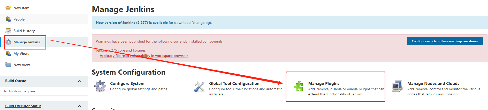
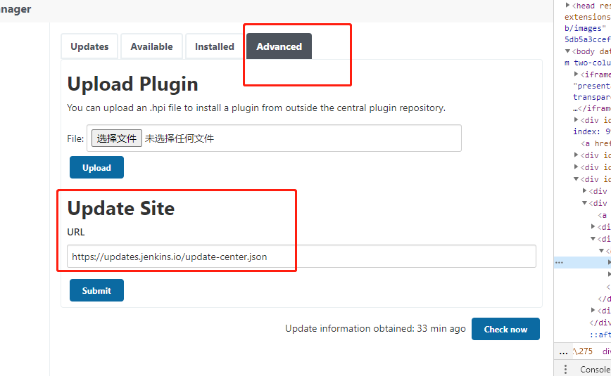
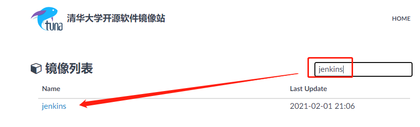
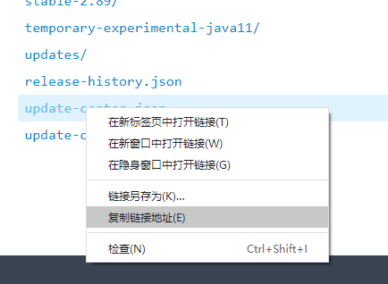
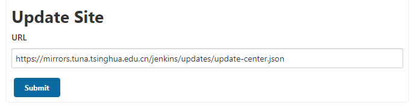

002-配置国内镜像
- 左侧
Manage Jenkins - Manage Plugins - Advanced - Update Site


- 前往清华加速源，搜索jenkins，然后找到updata-center.json，复制链接出来


- 将清华源的地址复制到
Update Site里面，提交接口，后面jenkins就会从清华源下载插件

Manage Jenkins - Manage Plugins - Advanced - Update Site



Update Site里面，提交接口，后面jenkins就会从清华源下载插件